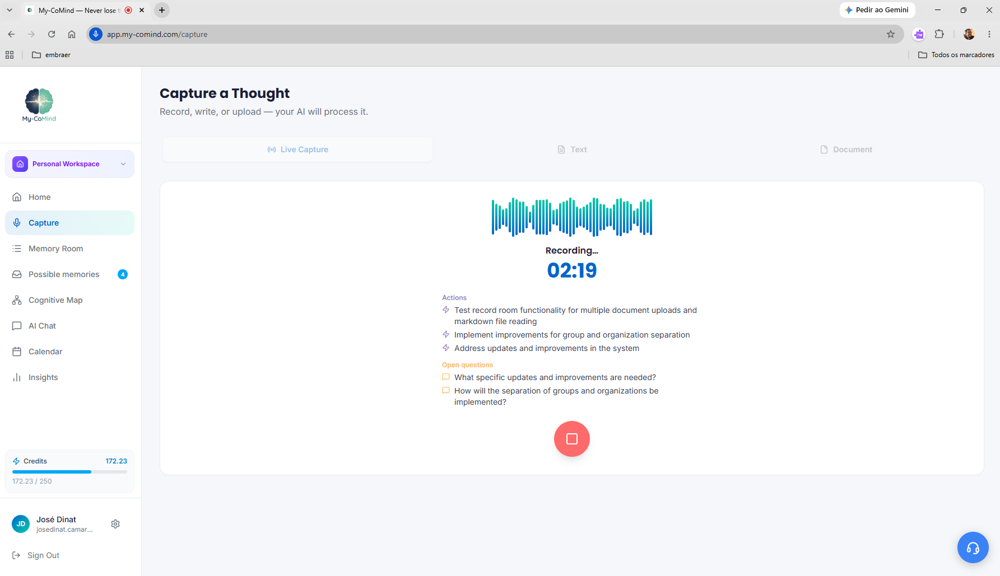
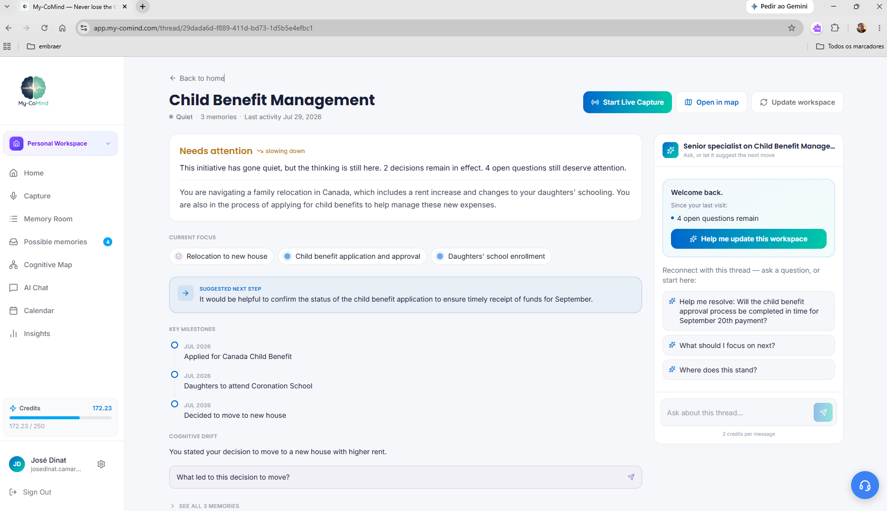
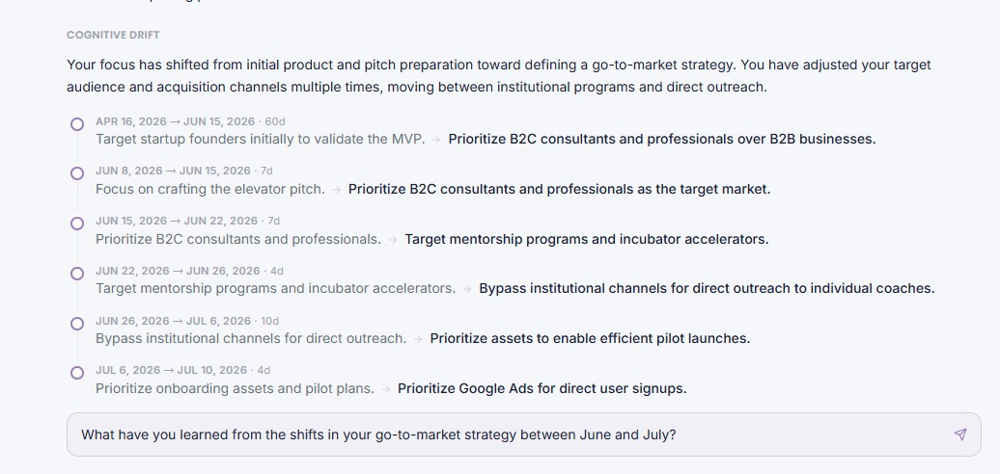
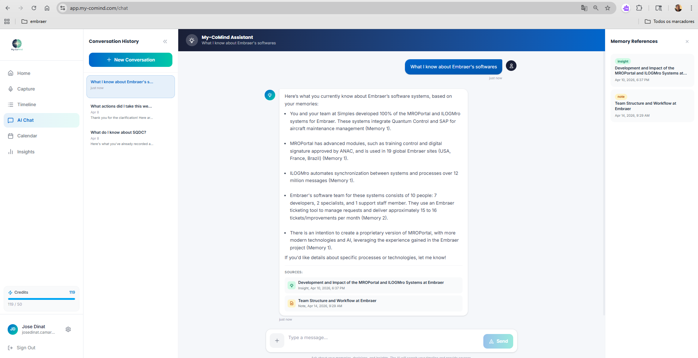
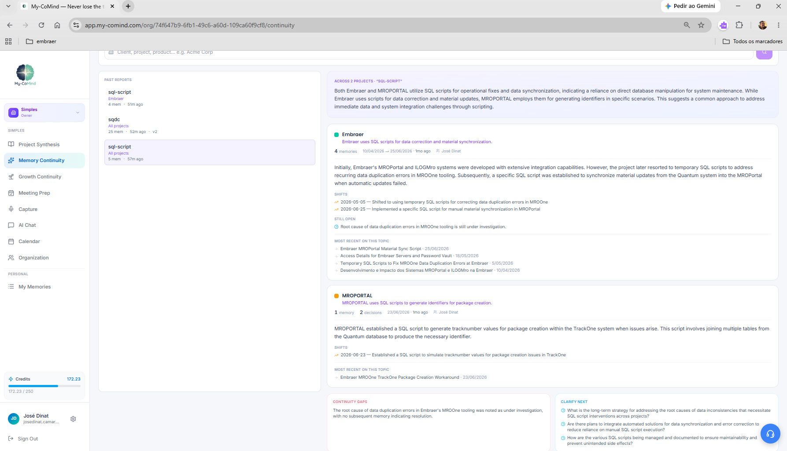

My-CoMind turns your conversations, decisions and insights into living workspaces you can question — so you pick up exactly where you left off, and see how your thinking got there.
From what you captured to a workspace you can ask questions to.
Live Capture records your meeting and extracts decisions in real time.
Workspaces organize everything automatically — no tagging needed.
My-CoMind has helped take my workflow to a new level. It lets me organize my clients, scale my operations, and deliver more relevant, actionable guidance — all without adding more work to my day.
From the moment you hit record to the moment someone else picks up the thread.

Live Capture — items detected while the meeting is still running
Start recording and keep talking. My-CoMind processes the conversation in short blocks, so you watch decisions and open questions appear while the meeting is still happening.

A Workspace — where things stand, milestones, open points
Memories about the same thing gather into one workspace that stays current. Open it and you know where the topic stands in ten seconds — without re-reading twenty notes.

Cognitive Drift — the shifts over time, in your own words
Most tools answer "what happened?". This one answers "how did the thinking change?" — the shift from one position to the next, with your own words on both sides and the time between them.

Ask a question — get reasoning with the memories behind it
Every workspace has a senior specialist that only knows your material. Ask "why did we decide that?" and get the reasoning with the memories it came from.

Project Synthesis — the standing read of where a project is
Share what matters into a project and the whole group inherits the context. One topic, compared across every project — no status report to write.
Your memory stays personal by default. Nothing is shared unless you share it, and your content is never used to train AI models.
See your knowledge as a map: named clusters, how strongly ideas connect, and where a topic sits in the whole picture.
Connect your calendar and generate a briefing before a meeting, built from your own past conversations and decisions.
Already using a meeting recorder? Bring transcripts in from Fireflies and let My-CoMind do the connecting.
Imported material arrives as suggestions. You approve what becomes a memory — nothing enters your knowledge without you.
Force a refresh whenever you want: it re-checks every loose memory that might belong and rebuilds the reading.
Patterns across your own material — what you keep returning to, what went quiet, what's still unresolved.
Whoever does the work keeps their own context. Whoever needs the wider view simply reads it — with nobody in between rewriting what already happened.
Each startup becomes a project. Mentors work inside the ones they follow; the program lead reads across all of them.
Developers and managers stay in their own project. Directors get the read across everything, without asking anyone to summarize it.
Therapists, consultants, advisors: one project per client or case. Arrive at each session already knowing where you left off — without rebuilding it from notes.
There's a fundamental difference between storing text and preserving cognitive continuity.
Your thinking becomes a continuous, questionable memory.
Start free and stay free if it fits. One paid plan unlocks everything — including organizations.
Everything you need to see whether this changes how you work.
The whole platform, including organizations and shared memory.
Credits are how the AI work is measured, so you only spend on what you actually use. A recorded meeting costs by the minute; capturing a note or asking a question costs a fraction of a credit. Reading your workspaces, your timeline and everything already generated is always free.
If your work depends on context, decisions and continuity — this was built for you.
Critical calls under uncertainty, every week. Keep the record of your reasoning — and see when your own direction shifted.
Strategic continuitySeveral people to follow, each with their own history. Walk into every session knowing exactly where you left off.
See how mentors use itDozens of decisions a day across projects. See where each one stands without asking anyone for a status update.
Decision clarityInsights that need to connect across clients and months. Stop rebuilding context from scratch every time.
Insight retentionYour memory is personal. Organizations are a layer on top of it — nothing crosses over unless you share it.
Your content is processed to serve you and is never used to train AI models.
A memory only enters a project when you share it, it stays yours, and you can take it back out.
Built and operated by MY-COMIND INC., a company registered in Ontario, Canada, and run to Canadian privacy expectations (PIPEDA, CASL).
The things people actually ask before trying it.
Capture one real conversation and see what comes back. The free plan is enough to judge it for yourself — no credit card, nothing to install.
Free plan available · No credit card required · Cancel anytime